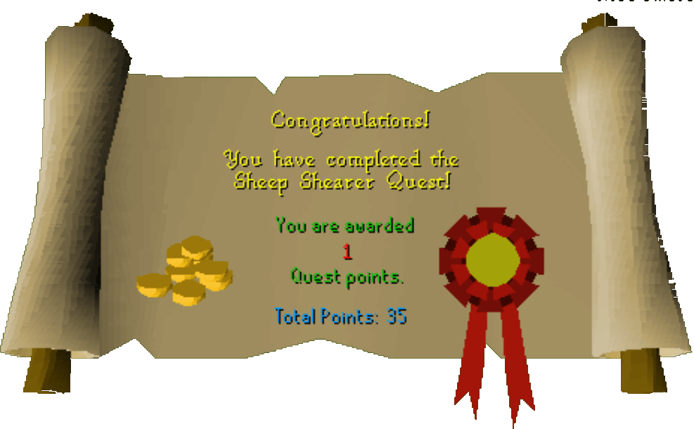

Sheep Shearer
Description: Farmer Fred's sheep are getting mighty woolly. He will pay you to shear them.Difficulty: Novice
Length: Short
Items & Skills Needed:
Reward: 1 Quest point, 150 Crafting XP, 60 coins
Instructions:
Talk to Fred the Farmer, who is located north of Lumbridge in the little building by all the sheep. Tell him that you are in search of a quest. He'll respond by saying his sheep need to be sheared and will reward you if you bring back 20 balls of wool.
Go south until you see a general store and buy some shears. Walk back up to the sheep pen and start shearing away.
Once you've got 20 wool, go to Lumbridge Castle and head to the 2nd floor, where you'll find a spinning wheel in the middle room. Use all your wool on it, and you should have 20 balls of wool.
Return to Fred with your 20 balls of wool and give them to him. He'll thank you and reward you for your help. You'll receive 1 Quest point, 60 gold coins, and 150 Crafting XP.
Congratulations, Quest Complete!

This quest guide was written on RuneHQ by Stormer. Thanks to Weezy and tj for corrections.
This quest guide was entered into the database on Mon, Feb 16, 2004, at 03:26:27 PM by Chownuggs and was last updated on Fri, Apr 23, 2004, at 12:35:12 PM.